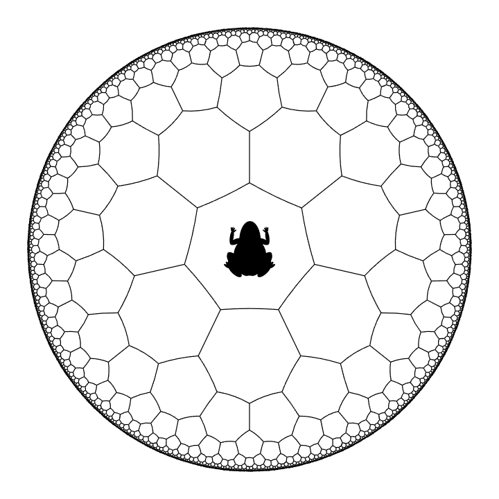

The hyperbolic plane, represented by the open unit disc, can be tiled by heptagons. Every tile is a hyperbolic heptagon (i.e. it has seven edges which are segments of geodesics in the hyperbolic plane) and every vertex is shared by three tiles.
Please refer to Problem 972 for some of the definitions.
The diagram below shows an illustration of this tiling.

Now, a hyperbolic frog starts from one of the heptagons, as shown in the diagram. At each step, it can jump to any one of the seven adjacent tiles.
Define $F(n)$ to be the number of paths the frog can trace so that after $n$ steps it lands back at the starting tile.
You are given $F(4) = 119$.
Find $F(20)$.
No test cases available.